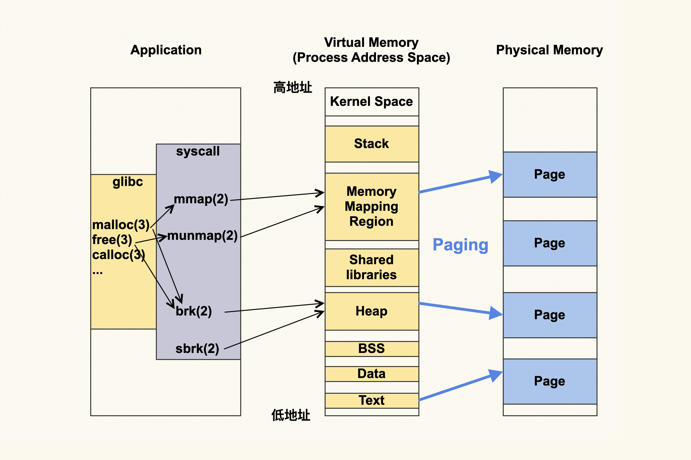
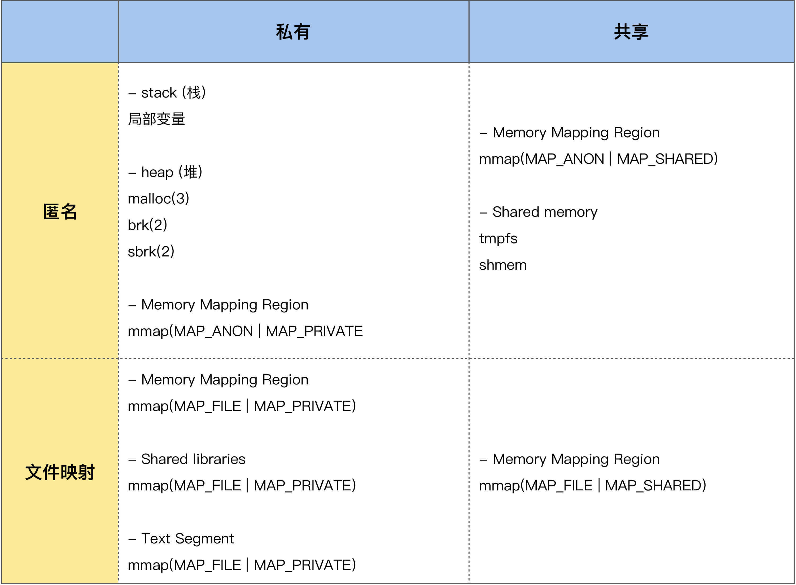
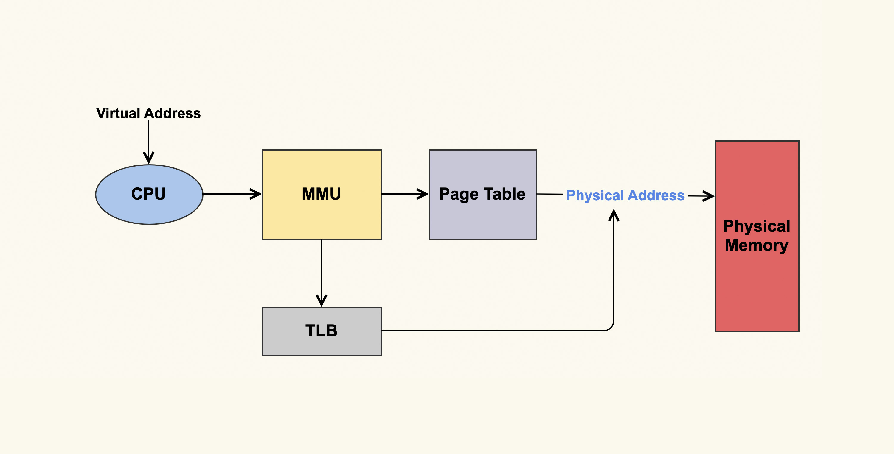
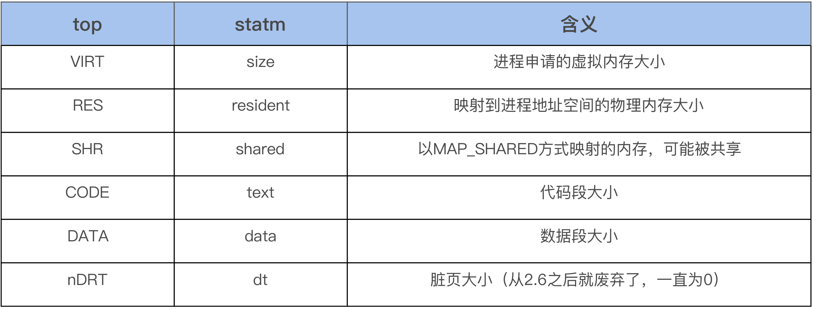
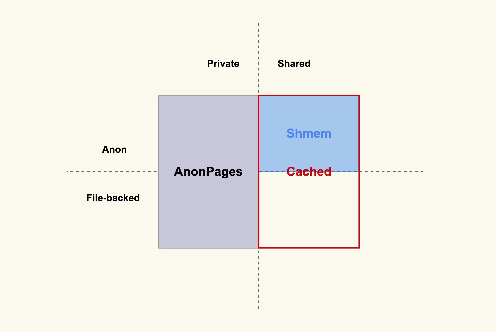

- 00 开篇词 如何让Linux内核更好地服务应用程序？.md.html
- 01 基础篇 如何用数据观测Page Cache？.md.html
- 02 基础篇 Page Cache是怎样产生和释放的？.md.html
- 03 案例篇 如何处理Page Cache难以回收产生的load飙高问题？.md.html
- 04 案例篇 如何处理Page Cache容易回收引起的业务性能问题？.md.html
- 05 分析篇 如何判断问题是否由Page Cache产生的？.md.html
- 06 基础篇 进程的哪些内存类型容易引起内存泄漏？.md.html
- 07 案例篇 如何预防内存泄漏导致的系统假死？.md.html
- 08 案例篇 Shmem：进程没有消耗内存，内存哪去了？.md.html
- 09 分析篇 如何对内核内存泄漏做些基础的分析？.md.html
- 10 分析篇 内存泄漏时，我们该如何一步步找到根因？.md.html
- 11 基础篇 TCP连接的建立和断开受哪些系统配置影响？.md.html
- 12 基础篇 TCP收发包过程会受哪些配置项影响？.md.html
- 13 案例篇 TCP拥塞控制是如何导致业务性能抖动的？.md.html
- 14 案例篇 TCP端到端时延变大，怎样判断是哪里出现了问题？.md.html
- 15 分析篇 如何高效地分析TCP重传问题？.md.html
- 16 套路篇 如何分析常见的TCP问题？.md.html
- 17 基础篇 CPU是如何执行任务的？.md.html
- 18 案例篇 业务是否需要使用透明大页：水可载舟，亦可覆舟？.md.html
- 19 案例篇 网络吞吐高的业务是否需要开启网卡特性呢？.md.html
- 20 分析篇 如何分析CPU利用率飙高问题 ？.md.html
- 加餐 我是如何使用tracepoint来分析内核Bug的？.md.html
- 结束语 第一次看内核代码，我也很懵逼.md.html
- 捐赠
06 基础篇 进程的哪些内存类型容易引起内存泄漏？
06 基础篇 进程的哪些内存类型容易引起内存泄漏？
你好，我是邵亚方。今天我们进入课程的第二个模块，来聊一下内存泄漏的话题。
相信你在平时的工作中，应该遇到过下面这些场景：
- 伴随着服务器中的后台任务持续地运行，系统中可用内存越来越少；
- 应用程序正在运行时忽然被OOM kill掉了；
- 进程看起来没有消耗多少内存，但是系统内存就是不够用了；
- ……
类似问题，很可能就是内存泄漏导致的。我们都知道，内存泄漏指的是内存被分配出去后一直没有被释放，导致这部分内存无法被再次使用，甚至更加严重的是，指向这块内存空间的指针都不存在了，进而再也无法访问这块内存空间。
我们平时遇到的内存泄漏可能是应用程序的内存泄漏，也可能是内核（操作系统）的内存泄漏；而应用程序的内存泄漏可能是堆内存（heap）的泄漏，也可能是内存映射区（Memory Mapping Region）的泄漏。这些不同类型的内存泄漏，它们的表现形式也是不一样的，解决方案也不一样，所以为了更好地处理内存泄漏问题，我们首先就需要去了解这些不同的内存类型。
这些不同的内存类型都可以理解为是进程地址空间(Address Space)的一部分，那地址空间是怎么工作的呢？
进程的地址空间
我们用一张图，来表示进程的地址空间。图的左侧是说进程可以通过什么方式来更改进程虚拟地址空间，而中间就是进程虚拟地址空间是如何划分的，右侧则是进程的虚拟地址空间所对应的物理内存或者说物理地址空间。

我们来具体聊一下这个过程。
应用程序首先会调用内存申请释放相关的函数，比如glibc提供的malloc(3)、 free(3)、calloc(3)等；或者是直接使用系统调用mmap(2)、munmap(2)、 brk(2)、sbrk(2)等。
如果使用的是库函数，这些库函数其实最终也是对系统调用的封装，所以可以理解为是应用程序动态申请释放内存，最终是要经过mmap(2)、munmap(2)、brk(2)、sbrk(2)等这些系统调用。当然从库函数到系统调用，这其中还涉及到这些库本身进行的一些内存层面的优化，比如说，malloc(3)既可能调用mmap(2)，又可能会调用brk(2)。
然后这些内存申请和释放相关的系统调用会修改进程的地址空间 (address space)，其中brk(2)和sbrk(2)修改的是heap(堆)，而mmap(2)和munmap(2)修改的是Memory Mapping Region（内存映射区）。
请注意这些针对的都是虚拟地址，应用程序都是跟虚拟地址打交道，不会直接跟物理地址打交道。而虚拟地址最终都要转换为物理地址，由于Linux都是使用Page（页）来进行管理的，所以这个过程叫Paging（分页）。
我们用一张表格来简单汇总下这些不同的申请方式所对应的不同内存类型，这张表格也包含了我们在课程上一个模块讲的Page Cache，所以你可以把它理解为是进程申请内存的类型大汇总：

这里面涉及很多术语，我们对其中重要的部分做些简单介绍，来看看这张表里的哪些部分容易出现内存泄漏。
进程运行所需要的内存类型有很多种，总的来说，这些内存类型可以从是不是文件映射，以及是不是私有内存这两个不同的维度来做区分，也就是可以划分为上面所列的四类内存。
- 私有匿名内存。进程的堆、栈，以及mmap(MAP_ANON | MAP_PRIVATE)这种方式申请的内存都属于这种类型的内存。其中栈是由操作系统来进行管理的，应用程序无需关注它的申请和释放；堆和私有匿名映射则是由应用程序（程序员）来进行管理的，它们的申请和释放都是由应用程序来负责的，所以它们是容易产生内存泄漏的地方。
- 共享匿名内存。进程通过mmap(MAP_ANON | MAP_SHARED)这种方式来申请的内存，比如说tmpfs和shm。这个类型的内存也是由应用程序来进行管理的，所以也可能会发生内存泄漏。
- 私有文件映射。进程通过mmap(MAP_FILE | MAP_PRIVATE)这种方式来申请的内存，比如进程将共享库（Shared libraries）和可执行文件的代码段（Text Segment）映射到自己的地址空间就是通过这种方式。对于共享库和可执行文件的代码段的映射，这是通过操作系统来进行管理的，应用程序无需关注它们的申请和释放。而应用程序直接通过mmap(MAP_FILE | MAP_PRIVATE)来申请的内存则是需要应用程序自己来进行管理，这也是可能会发生内存泄漏的地方。
- 共享文件映射。进程通过mmap(MAP_FILE | MAP_SHARED)这种方式来申请的内存，我们在上一个模块课程中讲到的File Page Cache就属于这类内存。这部分内存也需要应用程序来申请和释放，所以也存在内存泄漏的可能性。
了解了进程虚拟地址空间这些不同的内存类型后，我们来继续看下它们对应的物理内存。
刚刚我们也提到，进程虚拟地址空间是通过Paging（分页）这种方式来映射为物理内存的，进程调用malloc()或者mmap()来申请的内存都是虚拟内存，只有往这些内存中写入数据后（比如通过memset），才会真正地分配物理内存 。
你可能会有疑问，如果进程只是调用malloc()或者mmap()而不去写这些地址，即不去给它分配物理内存，是不是就不用担心内存泄漏了？
答案是这依然需要关注内存泄露，因为这可能导致进程虚拟地址空间耗尽，即虚拟地址空间同样存在内存泄露的问题。我们在下节课的案例篇中，也会分析对应的案例 ，这里先不展开描述了。
接下来，我们继续用一张图片来细化一下分页的过程。

如上图所示，Paging的大致过程是，CPU将要请求的虚拟地址传给MMU（Memory Management Unit，内存管理单元），然后MMU先在高速缓存TLB（Translation Lookaside Buffer，页表缓存）中查找转换关系，如果找到了相应的物理地址则直接访问；如果找不到则在地址转换表（Page Table）里查找计算。最终进程访问的虚拟地址就对应到了实际的物理地址。
了解了地址空间的相关知识之后，你就能够对进程的地址空间做一个合理的规划，或者说合理的控制了。这样出现问题时，不至于产生太严重的影响，你可以把规划好进程的地址空间理解为是进程内存问题的兜底方案。Linux上最典型的规划进程地址空间的方式就是通过ulimit，你可以通过调配它，来规划进程最大的虚拟地址空间、物理地址空间、栈空间是多少，等等。
对于进程地址空间相关的知识我们先聊到这里，接下来我们看下如何使用工具来观察进程的地址空间。
用数据观察进程的内存
学会观察进程地址空间是分析内存泄漏问题的前提，当你怀疑内存有泄漏时，首先需要去观察哪些内存在持续增长，哪些内存特别大，这样才能够判断出内存泄漏大致是出在哪里，然后针对性地去做分析；相反，如果你在没有仔细观察进程地址空间之前，就盲目猜测问题出在哪，处理问题很可能会浪费大量时间，甚至会南辕北辙。
那么都有哪些观察进程的工具呢？我们常用来观察进程内存的工具，比如说pmap、ps、top等，都可以很好地来观察进程的内存。
首先我们可以使用top来观察系统所有进程的内存使用概况，打开top后，然后按g再输入3，从而进入内存模式就可以了。在内存模式中，我们可以看到各个进程内存的%MEM、VIRT、RES、CODE、DATA、SHR、nMaj、nDRT，这些信息通过strace来跟踪top进程，你会发现这些信息都是从/proc/[pid]/statm和/proc/[pid]/stat这个文件里面读取的：
$ strace -p `pidof top`
open("/proc/16348/statm", O_RDONLY) = 9
read(9, "40509 1143 956 24 0 324 0\n", 1024) = 26
close(9) = 0
...
open("/proc/16366/stat", O_RDONLY) = 9
read(9, "16366 (kworker/u16:1-events_unbo"..., 1024) = 182
close(9)
...
除了nMaj（Major Page Fault， 主缺页中断，指内容不在内存中然后从磁盘中来读取的页数）外，%MEM则是从RES计算而来的，其余的内存信息都是从statm文件里面读取的，如下是top命令中的字段和statm中字段的对应关系：

另外如果你观察仔细的话，可能会发现，有些时候所有进程的RES相加起来要比系统总的物理内存大，这是因为RES中有一些内存是被一些进程给共享的。
在明白了系统中各个进程的内存使用概况后，如果想要继续看某个进程的内存使用细节，你可以使用pmap。如下是pmap来展示sshd进程地址空间里的部分内容：
$ pmap -x `pidof sshd`
Address Kbytes RSS Dirty Mode Mapping
000055e798e1d000 768 652 0 r-x-- sshd
000055e7990dc000 16 16 16 r---- sshd
000055e7990e0000 4 4 4 rw--- sshd
000055e7990e1000 40 40 40 rw--- [ anon ]
...
00007f189613a000 1800 1624 0 r-x-- libc-2.17.so
00007f18962fc000 2048 0 0 ----- libc-2.17.so
00007f18964fc000 16 16 16 r---- libc-2.17.so
00007f1896500000 8 8 8 rw--- libc-2.17.so
...
00007ffd9d30f000 132 40 40 rw--- [ stack ]
...
每一行表示一种类型的内存（Virtual Memory Area），每一列的含义如下。
- Mapping，用来表示文件映射中占用内存的文件，比如sshd这个可执行文件，或者堆[heap]，或者栈[stack]，或者其他，等等。
- Mode，它是该内存的权限，比如，“r-x”是可读可执行，它往往是代码段(Text Segment)；“rw-”是可读可写，这部分往往是数据段(Data Segment)；“r–”是只读，这往往是数据段中的只读部分。
- Address、Kbytes、RSS、Dirty，Address和Kbytes分别表示起始地址和虚拟内存的大小，RSS（Resident Set Size）则表示虚拟内存中已经分配的物理内存的大小，Dirty则表示内存中数据未同步到磁盘的字节数。
可以看到，通过pmap我们能够清楚地观察一个进程的整个的地址空间，包括它们分配的物理内存大小，这非常有助于我们对进程的内存使用概况做一个大致的判断。比如说，如果地址空间中[heap]太大，那有可能是堆内存产生了泄漏；再比如说，如果进程地址空间包含太多的vma（可以把maps中的每一行理解为一个vma），那很可能是应用程序调用了很多mmap而没有munmap；再比如持续观察地址空间的变化，如果发现某些项在持续增长，那很可能是那里存在问题。
pmap同样也是解析的/proc里的文件，具体文件是/proc/[pid]/maps和/proc/[pid]/smaps，其中smaps文件相比maps的内容更详细，可以理解为是对maps的一个扩展。你可以对比/proc/[pid]/maps和pmaps的输出，你会发现二者的内容是一致的。
除了观察进程自身的内存外，我们还可以观察进程分配的内存和系统指标的关联，我们就以常用的/proc/meminfo为例，来说明我们上面提到的四种内存类型（私有匿名，私有文件，共享匿名，共享文件）是如何体现在系统指标中的。

如上图所示，凡是私有的内存都会体现在/proc/meminfo中的AnonPages这一项，凡是共享的内存都会体现在Cached这一项，匿名共享的则还会体现在Shmem这一项。
$ cat /proc/meminfo
...
Cached: 3799380 kB
...
AnonPages: 1060684 kB
...
Shmem: 8724 kB
...
同样地，我也建议你动手写一些测试用例来观察下，这样你理解得就会更深刻。
我们对进程的内存管理相关的基础知识就先讲到这里，在下节课我们来讲一讲内存泄漏的实际案例以及其危害。
课堂总结
这节课我们讲述进程内存管理相关的一些知识，包括进程的虚拟内存与物理内存，要点如下。
- 进程直接读写的都是虚拟地址，虚拟地址最终会通过Paging（分页）来转换为物理内存的地址，Paging这个过程是由内核来完成的。
- 进程的内存类型可以从anon（匿名）与file（文件）、private（私有）与shared（共享）这四项来区分为4种不同的类型，进程相关的所有内存都是这几种方式的不同组合。
- 查看进程内存时，可以先使用top来看系统中各个进程的内存使用概况，再使用pmap去观察某个进程的内存细节。
进程的内存管理涉及到非常多的术语，对于常用的一些术语，比如VIRT、RES、SHR等，你还是需要牢记它们的含义的，只有熟练掌握了它们的含义，你在分析内存问题时才会更加地得心应手。比如说，如果RES太高而SHR不高，那可能是堆内存泄漏；如果SHR很高，那可能是tmpfs/shm之类的数据在持续增长，如果VIRT很高而RES很小，那可能是进程不停地在申请内存，但是却没有对这些内存进行任何的读写操作，即虚拟地址空间存在内存泄漏。
同样地，我希望你自己可以写一些测试用例来观察这些指标的变化。
课后作业
课后你可以写一些测试程序，分别分配我们这堂课提到的四种不同类型的内存，观察进程地址空间的变化，以及系统内存指标的变化。欢迎你在留言区与我讨论。
感谢你的阅读，如果你认为这节课的内容有收获，也欢迎把它分享给你的朋友，我们下一讲见。
© 2019 - 2023 Liangliang Lee. Powered by gin and hexo-theme-book.